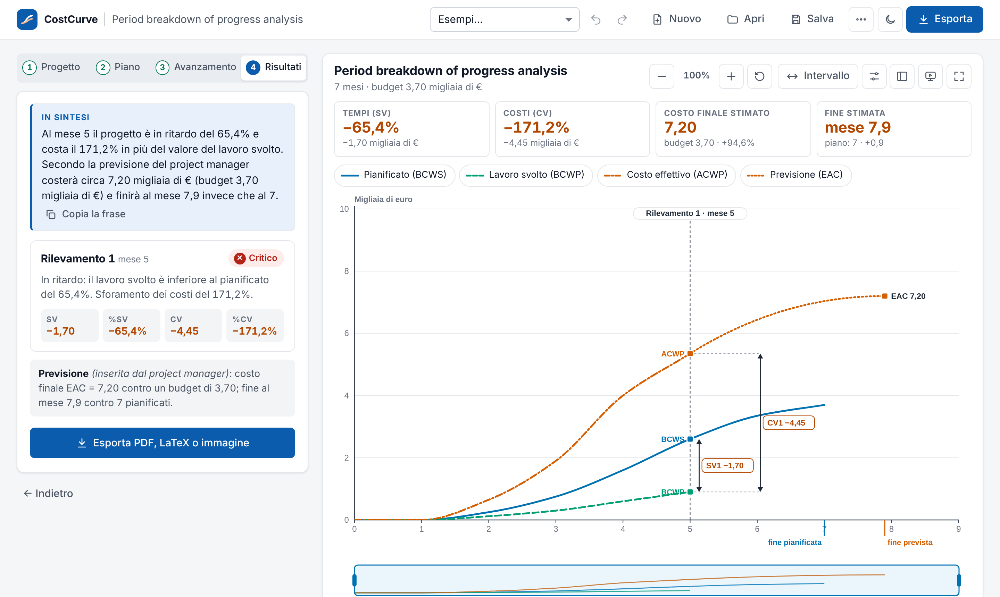
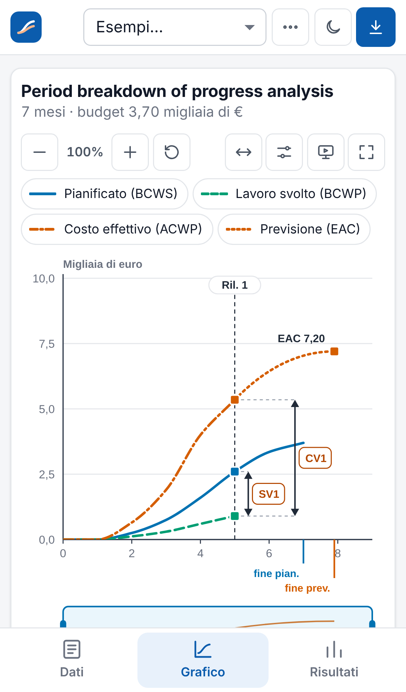

Nome del progetto: CostCurve
Project manager e autore: Matviy Kalistyy, classe 5C INF, materia GPOI – a.s. 2026/27
Scopo del progetto
Realizzare un sito web in cui un project manager inserisce i dati del proprio progetto e ottiene il diagramma costi-tempi (curve BCWS, BCWP e ACWP), gli scostamenti CV e SV anche in percentuale per uno o due monitoraggi, la tabella dei valori, un report PDF e un file LaTeX (.tex) parametrico.
Ho lavorato da solo, nel ruolo di project manager, usando un assistente di intelligenza artificiale come sviluppatore. Io ho definito requisiti, priorità e scelte, e ho collaudato il prodotto. Il codice è stato scritto dall'AI. Lo dichiaro subito perché condiziona sia i rischi sia la valutazione critica (sezioni 12 e 14).
Il sito è pubblicato su GitHub Pages: zoyrox.github.io/CostCurve.
Il diagramma costi-tempi visto a lezione (libro di testo, pagg. 198-199) è facile da capire ma lento da costruire. A mano o in Excel bisogna cumulare i costi periodo per periodo, disegnare tre curve e misurare gli scostamenti. È facile sbagliare, e se il grafico è piccolo le differenze non si leggono.
Lo strumento doveva quindi:
L'obiettivo principale è pubblicare entro venerdì 13 novembre un sito che, dati il piano e i rilevamenti, produca il diagramma costi-tempi e il resoconto. Gli obiettivi specifici sono:
Il piano iniziale prevedeva costo zero, quindi il 7 e l'8 novembre ho provato con un assistente AI gratuito. Il risultato non mi ha soddisfatto e ho deciso di cambiare strumento. In due sessioni ho perso circa 4 ore senza ottenere un risultato riutilizzabile.
Il 9 novembre ho valutato due alternative:
Con 4 giorni rimasti, ho scelto la seconda strada: 25 € erano accettabili, mentre perdere altri giorni avrebbe messo a rischio la consegna. È stata una modifica del piano dei costi: lo scostamento è spiegato nella sezione 13.
Ho fissato una regola: nessuna modifica va online senza il mio OK. Ogni versione è passata da una pull request su GitHub che ho approvato io.
| Data | Decisione o segnalazione | Conseguenza |
|---|---|---|
| 7-8 nov | Tentativo con AI gratuita, poi abbandonato | Circa 4 ore perse, piano dei costi rivisto |
| 9 nov | Acquisto dell'abbonamento (25 €) e brief completo: formule, grafico del professore, dati di prova, vincolo di tempo | Prima versione completa in giornata |
| 9 nov | Il .tex deve essere parametrico e compilabile da solo | I numeri si cambiano in un'unica sezione DATI |
| 9 nov | Collaudo della v1: non si potevano inserire i dati reali di un project manager e il grafico del libro non era ricreabile | Versione 2: dati per periodo, 1-2 rilevamenti, previsione manuale |
| 9 nov | Zoom solo se “veritiero al 100%”; stile più sobrio; tema chiaro/scuro | Assi ricalcolati, simbolo ≈, restyling |
| 10 nov | Il grafico era poco leggibile sul telefono e non sfruttava lo schermo del PC | Versione 3: grafico a misura di schermo, schede da telefono |
| 10 nov | Approvate tutte le 19 migliorie proposte | Più funzioni, ma anche più codice da verificare (vedi rischi) |
| 10 nov | Dopo la pubblicazione il sito appariva “rotto” sul mio browser | Correzione della cache (v3.0.1) |
| Stakeholder | Ruolo |
|---|---|
| Io | Project manager, committente e collaudatore |
| Professore di GPOI | Cliente finale e valutatore |
| Compagni di classe | Possibili utilizzatori |
| AI gratuita (scartata) | Primo fornitore valutato, non adeguato |
| Claude (Anthropic) | Fornitore a pagamento: codice, prove automatiche, bozze dei documenti |
| GitHub | Archivio del codice, versioni e hosting gratuito |
| Overleaf | Compilazione online del file .tex |
1. COSTCURVE
├── 1.1 Avvio
│ ├── 1.1.1 Studio di formule e grafico (pagg. 198-199)
│ ├── 1.1.2 Analisi della registrazione della lezione
│ └── 1.1.3 Scelta dello strumento AI (tentativo gratuito, poi abbonamento)
├── 1.2 Pianificazione e progettazione
│ ├── 1.2.1 Brief per l'AI
│ ├── 1.2.2 WBS, calendario e rischi
│ └── 1.2.3 Scelta della tecnologia (sito statico, hosting gratuito)
├── 1.3 Realizzazione v1
│ ├── 1.3.1 Calcolo di curve e indicatori
│ ├── 1.3.2 Generatore del file .tex
│ └── 1.3.3 Interfaccia, grafico e report PDF
├── 1.4 Versione 2 (dati reali, zoom, stile)
├── 1.5 Versione 3 (telefono, PC, funzioni aggiuntive)
├── 1.6 Test
│ ├── 1.6.1 Prove automatiche dei calcoli
│ ├── 1.6.2 Confronto sito ↔ .tex
│ └── 1.6.3 Prove su PC e telefono
└── 1.7 Chiusura
├── 1.7.1 Pubblicazione su GitHub Pages
├── 1.7.2 Documentazione
└── 1.7.3 Consegna
Finestra disponibile: da venerdì 6 a venerdì 13 novembre, al massimo 2-3 ore al giorno. Legenda:
| Attività | ven 6 | sab 7 | dom 8 | lun 9 | mar 10 | mer 11 | gio 12 | ven 13 |
|---|---|---|---|---|---|---|---|---|
| 1.1 Studio di libro e lezione | ||||||||
| 1.1.3 Tentativo con AI gratuita | ||||||||
| 1.2 Brief, piano e progettazione | ||||||||
| 1.3 Realizzazione v1 | ||||||||
| 1.4 Versione 2 | ||||||||
| 1.5 Versione 3 | ||||||||
| 1.6 Test | ||||||||
| 1.7 Chiusura e consegna |
| Fase | Ore |
|---|---|
| Studio di libro e lezione | 2 |
| Tentativo con AI gratuita (lavoro perso) | 4 |
| Brief, piano e progettazione | 2,5 |
| Realizzazione v1, v2 e v3 (richieste, scelte, controllo) | 6 |
| Test e prove su dispositivi | 3 |
| Chiusura, documentazione e consegna | 3 |
| Totale | 20,5 ore |
Il lavoro reale si è concentrato tra il 9 e il 10 novembre, oltre le 2-3 ore al giorno previste: è stato il prezzo dei due giorni persi. Sul totale della settimana il limite è rispettato (20,5 ore su un massimo di circa 24), ma la distribuzione no.
| Versione | Contenuto | Motivo |
|---|---|---|
| v1 | Calcolo delle curve, grafico, tabella, report PDF, .tex, pubblicazione | Brief iniziale |
| v2 | Dati per periodo, 1-2 rilevamenti, previsione manuale, zoom veritiero, nuovo stile, tema scuro | La v1 non rispondeva al bisogno reale: brief incompleto |
| v3 | Grafico a misura di schermo, schede da telefono, gesti, cruscotto, sintesi, note, link, Excel/CSV, presentazione, app installabile | Leggibilità scarsa su telefono e PC |
| v3.0.1 | Il browser non usa più file vecchi dopo un aggiornamento | Errore visibile solo sul sito pubblicato |


| Verifica | Risultato |
|---|---|
| Prove automatiche dei calcoli | 28 su 28 superate |
| Numeri del sito confrontati con il .tex compilato | 7 casi, 0 differenze |
| Prova completa nel browser | 38 controlli su 38 |
| Esempio numerico del libro (pag. 199) | Valori coincidenti con quelli del libro |
| Telefono reale, Safari, Firefox | Non verificato (solo telefono simulato e Chrome) |
Le prove automatiche le ha scritte la stessa AI che ha scritto il codice: un errore di interpretazione delle formule potrebbe trovarsi in entrambi. Per questo il confronto con i valori dell'esempio del libro è la verifica più importante, non i numeri “28/28” e “38/38”.
Difetti trovati in collaudo:
Seguendo l'impostazione del libro: probabilità e impatto, poi la valutazione. La colonna “Esito” indica se il rischio si è verificato davvero.
| Rischio | Prob. | Impatto | Valut. | Prevenzione / risposta | Esito |
|---|---|---|---|---|---|
| Strumento gratuito non adeguato | Alta | Alto | Alto | Alternativa a pagamento con un tetto di spesa (1 mese) | Verificato: 4 ore perse, +25 € |
| Calcoli sbagliati dall'AI, non riconosciuti da me | Media | Alto | Alto | Formule del libro nel brief, confronto con l'esempio numerico del libro, sito ↔ .tex | Non verificato finora |
| Requisiti incompleti o capiti male | Alta | Medio | Alto | Collaudo subito dopo la v1, iterazioni brevi | Verificato: v1 da rifare in parte |
| Tempo insufficiente dopo il ritardo iniziale | Media | Alto | Alto | Concentrare il lavoro il 9-10 novembre, tenere 11-13 come margine | Assorbito, con giorni più lunghi |
| Aggiunta continua di funzioni (scope creep) | Media | Medio | Medio | Proposte solo dopo il collaudo, approvazione esplicita | Parzialmente verificato: 19 migliorie in un colpo |
| Difetti visibili solo online | Media | Medio | Medio | Prova del sito pubblicato dopo ogni rilascio | Verificato: cache, corretto in v3.0.1 |
| Codice che non so modificare da solo | Alta | Medio | Alto | Codice commentato in italiano, guida d'uso, .tex modificabile solo nella sezione DATI | Rischio ancora aperto |
| Fine dell'abbonamento prima della consegna | Bassa | Medio | Basso | Tutto il codice su GitHub, il sito non dipende dall'AI per funzionare | Non verificato |
| Problemi su browser o telefoni non provati | Media | Basso | Medio | Tecnologie web standard, nessuna libreria esterna online | Aperto: Safari e Firefox non provati |
Rischi più importanti.
Preventivo iniziale (6 novembre, con AI gratuita)
| Voce | Best case | Most likely | Worst case |
|---|---|---|---|
| Strumento AI | € 0 | € 0 | € 25 |
| Hosting (GitHub Pages) | € 0 | € 0 | € 0 |
| Dominio personalizzato | € 0 | € 0 | € 12 |
| Software (editor, LaTeX, Overleaf) | € 0 | € 0 | € 0 |
| Hardware (PC e telefono già posseduti) | € 0 | € 0 | € 0 |
| Totale | € 0 | € 0 | € 37 |
Consuntivo
| Voce | Previsto | Speso | Scostamento |
|---|---|---|---|
| Abbonamento mensile Claude (acquistato il 9 nov) | € 0 | € 25 | + € 25 |
| Hosting, software, hardware | € 0 | € 0 | € 0 |
| Totale | € 0 | € 25 | + € 25 |
Rispetto al caso most likely il progetto è andato oltre il budget di 25 €, restando comunque entro il worst case. La causa è il rischio “strumento gratuito non adeguato”, che si è verificato. Le ore di lavoro non sono state pagate e non compaiono nel budget, ma il tentativo fallito ne ha fatte perdere circa 4.
Cosa ha funzionato
Cosa non ha funzionato
Limiti del prodotto
Il sito è pubblicato e funziona: dai dati di un progetto produce il diagramma costi-tempi, gli indicatori, il report PDF e il file LaTeX.
Rispetto al piano iniziale ci sono stati tre scostamenti: +25 € di costi, circa 4 ore perse e un difetto arrivato online, corretto in giornata. La scadenza è rispettata.
L'esperienza mi ha mostrato in pratica cosa significa controllare un progetto: un rischio messo in tabella (lo strumento gratuito) si è verificato davvero, ha spostato costi e tempi, e averlo previsto ha reso più veloce la decisione su come rispondere.